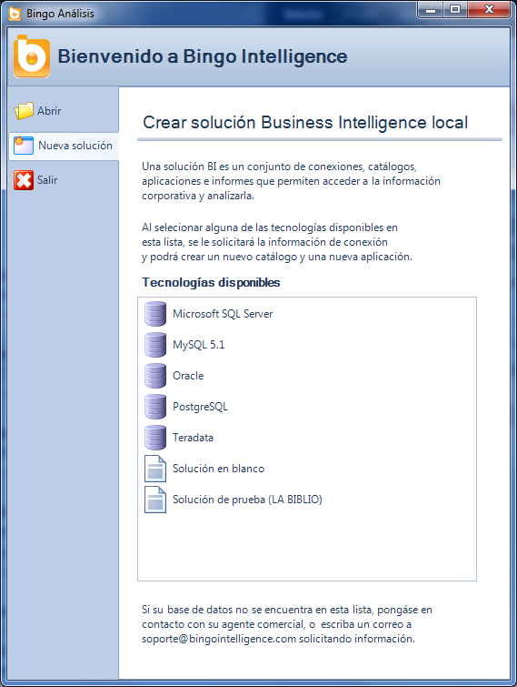

Tipos de solución
En Bingo Intelligence se denomina “solución” a un conjunto de aplicaciones y catálogos. Existen dos tipos de soluciones:
- Soluciones de servidor: En las soluciones de servidor los catálogos y aplicaciones están guardados en una base de datos, y los usuarios acceden a ellos a través de un servidor de Bingo Intelligence. El sistema se encarga de mostrar a cada usuario la información a la que se tiene acceso (se puede restringir el acceso a determinadas aplicaciones y/o catálogos, etc.)
- Soluciones locales: En las soluciones locales los catálogos y las aplicaciones se guardan en un archivo en el ordenador del usuario. Las soluciones locales no implementan ningún control de acceso, por lo que cualquier persona con acceso al archivo de la solución, podrá abrir los informes y navegar por la información.
Ventajas de las soluciones de servidor
Habitualmente, las empresas disponen de una única solución que contiene todas las aplicaciones Business Intelligence de la compañía. Evidentemente, se trata de una solución de servidor, y se definen controles de acceso para que cada departamento o equipo pueda acceder exclusivamente a su información.
Esta manera de trabajar presenta algunas ventajas significativas:
- Facilidad de administración. Toda la información está guardada en una única base de datos o repositorio. Esta base de datos contiene no sólo la definición de todas las aplicaciones y catálogos, sino también la configuración de las conexiones a las bases de datos, y la configuración de los usuarios. Haciendo copias de seguridad regulares de este repositorio los administradores del sistema pueden restaurar el sistema en caso de necesidad.
- Control de accesos. Tal y como se ha comentado, en las soluciones de servidor es posible crear usuarios con diferentes roles, y es posible limitar el acceso a determinados catálogos y aplicaciones.
- Acceso remoto. Cualquier usuario con acceso al servidor de Bingo Intelligence podrá acceder a la información corporativa. Ni los informes ni la información que muestran se guarda en el PC local del usuario. Tampoco es necesario configurar los drivers de base de datos en los ordenadores de los usuarios (ya que el servidor de Bingo Intelligence centraliza todas las consultas de los usuarios). Todo está en el servidor y el usuario sólo necesita instalarse el cliente de Bingo Intelligence.
Usos de las soluciones locales
Las soluciones locales no necesitan un servidor de Bingo Intelligence. Tampoco existe una base de datos donde se guarde la configuración de los catálogos y de las aplicaciones. Toda la configuración de la solución se guarda en un archivo con extensión .bi
Es importante destacar que aunque no se requiere un servidor de Bingo Intelligence sigue siendo necesario disponer de una base de datos donde está la información que mostrarán las aplicaciones. Es decir: Las soluciones locales se conectan directamente a la base de datos corporativa donde está la información. Es necesario, por lo tanto, tener un datawarehouse, un datamart, o una base de datos relacional con la información corporativa. Esta base de datos debe estar accesible desde el ordenador de los usuarios.
Las soluciones locales se utilizan habitualmente en tres escenarios:
- Microinstalaciones. Si únicamente existe un usuariodel sistema, o existen varios usuarios que no acceden simultáneamente, las soluciones locales pueden ser una buena opción. Al trabajar en local, no es necesario instalar el servidor por lo que la instalación y puesta en marcha suele ser más rápida. En las “microinstalaciones” todos los usuarios son administradores (y tienen por lo tanto un acceso completo a la solución).
- Entornos de desarrollo. Es habitual crear prototipos o realizar pruebas desde soluciones locales. De este modo, se pueden usar todas las funcionalidades de Bingo Intelligence sin necesidad de afectar al servidor de producción de Bingo Intelligence. Nadie tendrá acceso a estos desarrollos o pruebas (salvo que se comparta el archivo .bi de la solución).
- Versión de evaluación. La versión de evaluación de Bingo Intelligence permite crear soluciones locales. De este modo, es posible evaluar el producto libremente, accediendo a tus propias bases de datos, y la instalación resulta muy sencilla (no es necesario instalar el servidor ni crear el repositorio).
Normalmente, cada solución local consiste en un único catálogo y en una única aplicación. Si se quiere trabajar en local, y se dispone de diferentes bases de datos, lo habitual es crear una solución local para cada base de datos. De este modo, las aplicaciones se mantienen aisladas (y es posible compartirlas mediante carpetas compartidas, o incluso por correo electrónico).
Cómo se crea una solución local
Existen dos maneras de crear una solución en local:
- Crear una nueva solución en local desde el “Panel de Bienvenida”
- Exportar una solución existente
Desde el “Panel de bienvenida”
Es posible crear una solución local nueva desde el “Panel de Bienvenida” de Bingo Intelligence.

Para crear una solución local, se tiene que seleccionar alguna de las tecnologías disponibles, o seleccionar la solución local de prueba (LA BIBLIO) que está disponible de manera predeterminada.
Al seleccionar una tecnología, aparecerá una ventana para definir la conexión, y posteriormente podremos crear un catálogo utilizando esa conexión, y podremos crear una aplicación. Al guardar la solución local (desde el menú “Herramientas”), se nos solicitará el nombre y la ubicación donde guardar la solución local.
El siguiente vídeo muestra a partir del minuto 1:20 el proceso completo para crear un catálogo y una pequeña aplicación en local:
Exportación de una aplicación
Es posible crear una solución local exportando una aplicación de una solución de servidor. Al exportar una aplicación, se genera una solución en local que contiene esa aplicación y todos los catálogos y conexiones necesarias. Una vez exportada, existirán dos aplicaciones independientes (en el servidor, y en la solución local recién creada).
Para exportar una aplicación, se debe abrir el “Administrador de aplicaciones”, y seleccionar la opción “Guardar en local” del menú contextual.